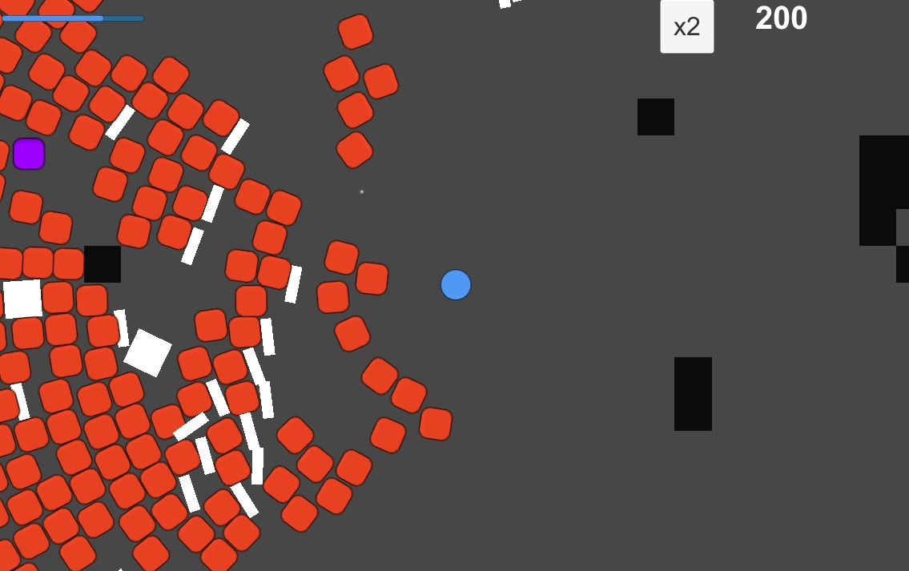
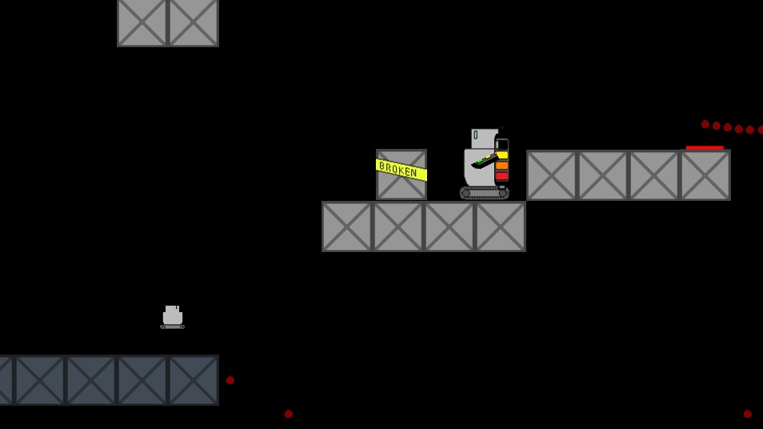
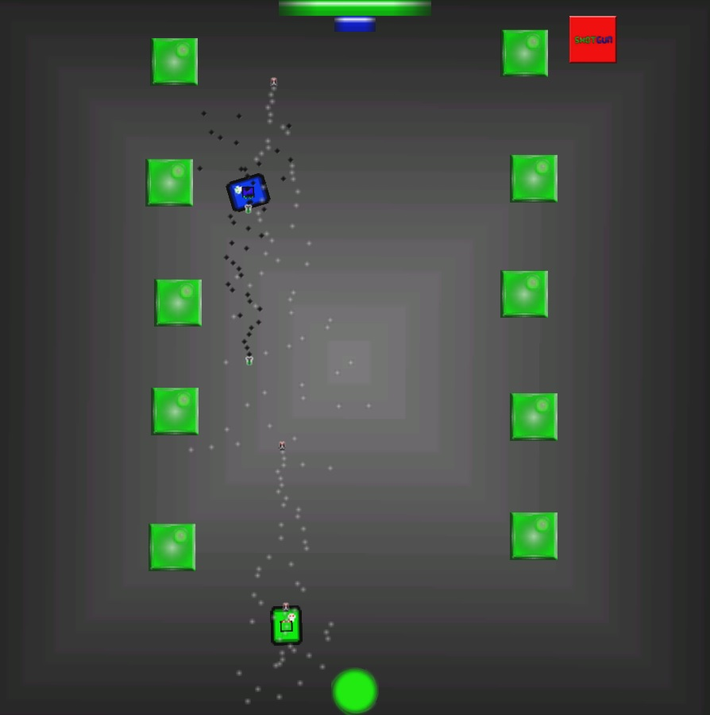

Below is a list containing most of the projects that I have worked on (or are working on), with most recent projects on the top, and the oldest ones at the bottom.
Tactical Tank Conflict is an RTS/Tower Defense game that I am currently working on with a group of other AIE students. This game is only ever intended to be a small prototype, and is being developed within the Unity engine.
The game will play like a Tower Defense game, with the player placing tanks and walls around the map. If there is enough time, these tanks will act as units, and will chase enemies down within a small radius, however otherwise they will act as towers, and shoot things while stationary. Some enemies will be able to attack walls/tanks instead of heading straight to the end, and the player will have to split their resources between repairing their tanks/walls and placing more.
This game is still in a very, very early stage of development, and hence I haven't provided a link/picture/etc. for it.
[insert your own, creative name for my engine here] is a game engine that I am currently working on in C++ with OpenGL. This engine has been in development for two and a bit months. This is the first engine that I have worked on, and while it is very basic by engine standards, I am greatly enjoying making it.
The engine currently allows users to easily create games, and has the following features implemented so far:
The link in the heading leads to the GitHub page for this engine. When I have completed work on it, a download link to the finished product will be provided here.
Moderate Downpour is a one-button game that I made in Unity with a group of other students. Moderate Downpour was developed in short bursts over a 4-week period, and was my first experience working with artists and designers.
In Moderate Downpour, you play as a man walking through a storm who must avoid various hazards: splashes from passing cars, incoming lightning, various objects thrown at you by the wind, and the relentless downpour of rain. You avoid these hazards by switching your umbrella between being up and being forwards- having the umbrella forwards blocks most hazards, however for as long as the umbrella is forwards, you will be getting wet, which blurs the screen, and eventually kills you.
Click here to download a release build of Moderate Downpour, or click the heading above to access the GitHub page for it.
QuadriBATTLEral is a top-down shooter game I produced in Unity. It was a two week long project made with the intention of refreshing my knowledge of Unity.
The goal of QuadriBATTLEral is to score as many points as you can before dying to an unstoppable tide of squares. Score is increased by killing squares, and your score multiplier can be increased by killing the 'spawner' squares. Doing this also generates upgrades, that spawn on random positions within the game world. Walls, crates and 'spawner' squares are all placed procedurally at the start of the game. The game features three enemy types- normal squares, that chase you and deal damage upon collision with you, 'shield' squares that carry a rectangle shield with them and reflect your shots at you, and 'spawner' squares that spawn the other types of square (and spawn a new spawner square on death).
QuadriBATTLEral has three difficulties- easy, in which you move at approximately twice the speed of the enemy squares, hard, in which you only move slightly faster than the enemy squares, and chaos, in which you move quickly and have a ridiculously fast fire rate, which can easily lead to accidental ricochet self-damage.
Click here to download a release build of QuadriBATTLEral, or click the heading above to get access to the Unity files.
Match Cubed is a web game that I made using Javascript(and some HTML and CSS), and currently holds the honour of being the most fun game that I have produced (in my opinion). It won me the 2014 "Best Technical Project" award for first year AIE students.
Match Cubed is a Columns-style game with a twist- it plays out in three dimensions! Groups of three coloured blocks fall from the sky, and by moving those blocks forwards, backwards, left, right, and switching the order of the blocks, you must make lines of three or more blocks of the same colour. Additionally, white blocks cannot be matched- they fall through the bottom of the game world, and so blocks beneath them must be matched to move them downwards. As you play, the game gets progressively faster, and if you make it far enough, more colours can be added, ensuring that the difficulty ramps up quickly.
Click on the heading above to play Match³ .
Powered Down is a puzzle platformer two other programmers and I attempted to make using C# and the MonoGame and Farseer engines. It was, unfortunately, never finished. It was developed for both PC and Playstation Vita. This was the first decent-sized project that I worked with other programmers on.
In Powered Down, you play a broken robot attempting to escape from an old, derelict factory. The core mechanic is power- you are only powered, and hence can only control your robot, while he is touching a powered (electrified) surface. While not in contact with a powered surface (for example, mid jump, or while sitting on an unpowered platform) you have no control, and if you get stuck in this state the game ends. Power can be transferred to objects through conductive materials, and so puzzles involved manipulating objects within the game world to create a powered path to the exit.
Powered Down also has a built-in level editor, allowing players to extend the amount of content within the game. The location of saved files is stated to players, allowing them to transfer level save files to others to share levels.
You can download the Powered Down project by clicking on the heading above, or you can access the blog that was maintained throughout the project's development here. 
This program is an encoding program I created in C++ for making files smaller. It uses both Huffman Encoding and Run-Length Encoding to reduce file sizes.
My encoding program first uses a modified Run-Length Encoding algorithm, and checks if this has made the file smaller. If it has, the RLE encoded data then goes through Huffman Encoding, and if it hasn't, then the original data then goes through Huffman Encoding. While Run Length Encoding, instead of checking adjacent characters to see if they are identical, I check every third character (and then repeat this for every third character + 1, then every third character + 2). By doing this, image files that store colours as RBG groups can often be reduced in size by taking advantage of adjacent pixels often having similar colours in each channel. As I don't check to see whether the Huffman Encoding stage will decrease the file size, using my encoder on small files can actually result in larger file sizes.
You can download a release build of my encoding program here or you can access the project/source files for it by clicking the heading above.
Interstellar Banana is a four player twin-stick shooter I created with another developer. It was created in Unity over a two week period, and was both my first experience with C# and my first experience with Unity.
Interstellar Banana was created for the AIE arcade machine- a computer inside an arcade cabinet, with 4 Xbox controllers plugged into it. As such, it only supports Xbox controllers- keyboard controls were never implemented.
Interstellar Banana pits 4 players against each other in a fight to score the most points. Each player pilots a spaceship, and points are gained by destroying other players' spaceships, while points are lost for having your own spaceship destroyed. The game is very fast paced, with each ship dying to just a single bullet, and each round lasting only one minute. To gain an edge, players can collide with the power-up giving star, which will temporarily power-up the players shots; however only one player may have the power-up at any one time, so if another player collides with the star then they will steal the power-up from the previous person who had it. Interstellar Banana features voice acting from several members of the class, which helps to ensure that the game is silly and fun.
A link to/ image of Interstellar Banana has not been included here because it uses sprites sourced from the internet, and doesn't include a 'credits' screen crediting the artist(s) who produced those sprites.
Timey Tanks is a top down shooter for one or two players I made with C++ and OpenGL.
Within Timey Tanks, two tanks must try to deal as much damage to each other as possible. The game supports playing with two players on the same keyboard, or one player against an AI controlled tank. The controls allow players to move forwards or backwards, rotate their tank, rotate their turret, and fire. Additionally, when playing with two players, one shared button is available for either player to use that allows them to enter Time Travel mode! This plays backwards through the last 5 seconds of gameplay, allowing damage to be averted and different futures to be made! However, this can only be used sparingly- so use it wisely! Timey Tanks has three temporary powerups that can be collected- the Shotgun, that allows the player to fire spreads of shots, the Missile Whip, a hard to use stream of missiles that can cause massive damage if aimed correctly, and the Swarm, a glitch-inspired mine layer that fires shots that clump together and have a mind of their own. Timey Tanks features several modes:
Timey Tanks also features a maths library that I created, which includes some functions for vectors (two dimensional and three dimensional) and matrices (3x3 only).
You can download a release build of Timey Tanks here, or click the heading above to access the project/source files (please note that large parts of the OpenGL code in the project were provided by my teacher, and while I made modifications to them, were not my own work).
2042 is a top down shooter (in the style of 1942) I developed in C++ using an engine provided by AIE.
In 2042, you play as a jet trying to survive an endless onslaught of alien invaders. Killing aliens gets you points, and sometimes causes a power-up or extra life to drop. 2042 features four enemy types- charger enemies that charge straight for you, shooter enemies that try and stay at a safe distance and shoot at you from above, spawner enemies that frequently create more chargers, and an unkillable orbital laser, that relentlessly chases you and is faster than you, but is slow to change direction. Enemies come in from the edges of the screen (unless spawned by a spawner), and will quickly overwhelm the player if not dealt with.
You can download a playable version of the game here or download the project/source files by clicking on the heading above. Note that the playable version here isn't the newest version, and is missing some features (most notably spawner enemies) are missing. The project/source files are the newest version, however the AIE engine has issues with newer versions of Visual Studio.